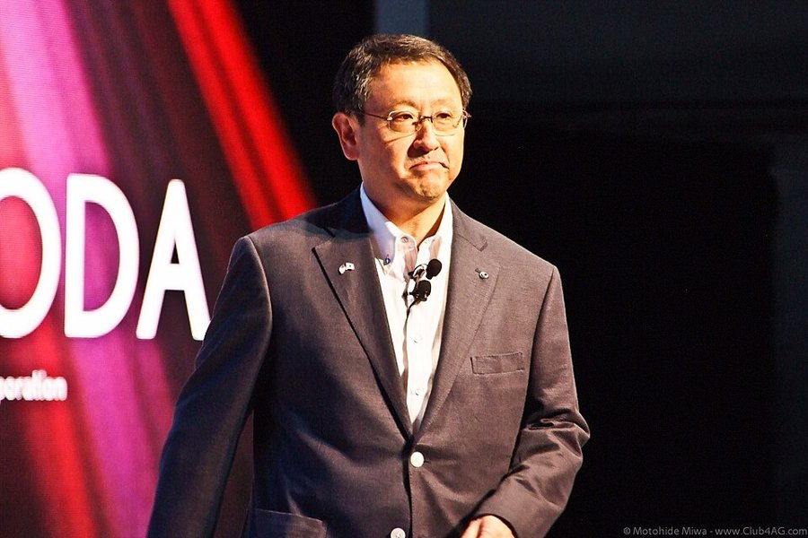

Management
Toyota Motor ordnet Konzernstruktur neu und besetzt Führungspositionen um
$TM
Toyota Motor Corporation kündigt zum 1. Januar 2027 eine umfassende organisatorische Umstrukturierung und zahlreiche Neubesetzungen in der Führungsebene an.

Toyota Motor Corporation hat eine tiefgreifende organisatorische Neuausrichtung angekündigt, die zum 1. Januar 2027 in Kraft tritt. Das Unternehmen etabliert unter anderem eine neue Sparte für Robotik sowie eine Gruppe für Unternehmensphilosophie und Bildung unter der Leitung von Akio Toyoda. Zudem werden mehrere Regionen neu strukturiert, darunter die Aufteilung der Region Indien-Naher Osten-Ostasien-Ozeanien in zwei separate Einheiten. Im Zuge dieser Maßnahmen kommt es zu zahlreichen Wechseln in der Führungsebene, darunter neue CEOs für die Regionen Nordamerika, China und Asien. Diese Veränderungen zielen darauf ab, die Entscheidungsfindung zu beschleunigen und die Wettbewerbsfähigkeit in den jeweiligen Märkten zu stärken.
Toyota baut Konzernstruktur für die Zukunft um
Mit der zum 1. Januar 2027 wirksamen Neuordnung vollzieht Toyota einen strategischen Wandel hin zu einer agileren Unternehmensstruktur. Durch die Etablierung einer dedizierten Robotik-Sparte und die Auflösung zentraler Forschungszentren zugunsten einer direkten Integration in die Produktentwicklung unterstreicht der Konzern den Anspruch, technologische Innovationen schneller in die Praxis umzusetzen. Gleichzeitig stärkt die Aufteilung regionaler Einheiten die lokale Entscheidungsbefugnis, um auf die unterschiedlichen Anforderungen der Weltmärkte flexibler reagieren zu können. Unter der Leitung von Akio Toyoda rückt zudem die interne Bildungsarbeit in den Fokus, um die traditionelle Fertigungsphilosophie in einer zunehmend digitalisierten und automatisierten Mobilitätswelt zu verankern. Diese tiefgreifenden personellen und strukturellen Anpassungen signalisieren den Versuch, die Wettbewerbsfähigkeit durch eine dezentralere, aber gleichzeitig stärker auf Kernkompetenzen fokussierte Organisation langfristig zu sichern.
Quelle: Pressemitteilung Toyota Motor Corp/ (SEC-Meldung)
Hinweis: Dieser Text dient der allgemeinen Information und ist weder Anlage-, Steuer- noch Rechtsberatung. Kapitalanlagen sind mit Risiken verbunden, bis hin zum Totalverlust.